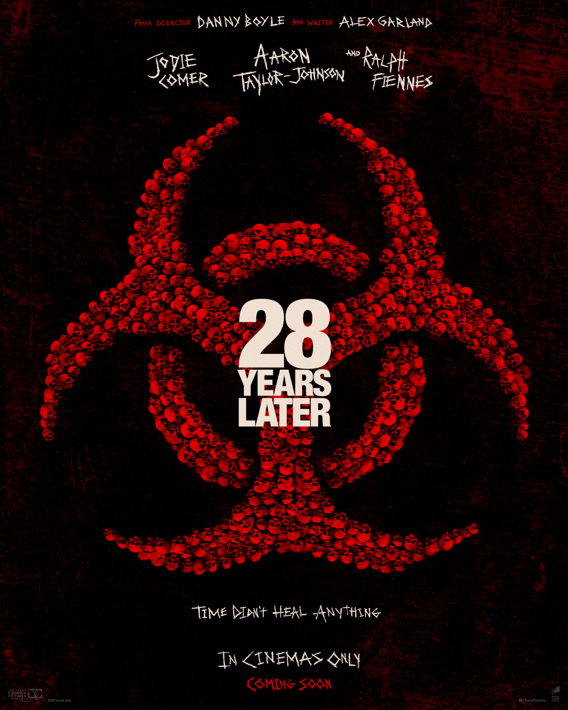

Birthdate: June 13, 1990
Nationality: British
Awards: Golden Globe (Nocturnal Animals)
Known For: Kick-Ass, Nocturnal Animals, Bullet Train
Note: Prepared physically for months to portray someone raised entirely in a post-virus world
Birthdate: December 22, 1962
Nationality: British
Awards: Two Academy Award nominations, BAFTA
Known For: Schindler's List, The English Patient, The Grand Budapest Hotel
Note: His character represents a disturbing portrait of what survival can do to ethics
Birthdate: March 11, 1993
Nationality: British
Awards: Emmy Award, BAFTA (Killing Eve)
Known For: Killing Eve, Free Guy, The Last Duel
Note: Shot her scenes in remote Scottish locations under genuinely harsh conditions
Nationality: British
Known For: Film debut
Note: Young newcomer whose performance anchors the emotional core of the story
Birthdate: October 3, 2001
Nationality: Swedish
Known For: Young Royals
Note: International cast reflects the global ambition of the sequel